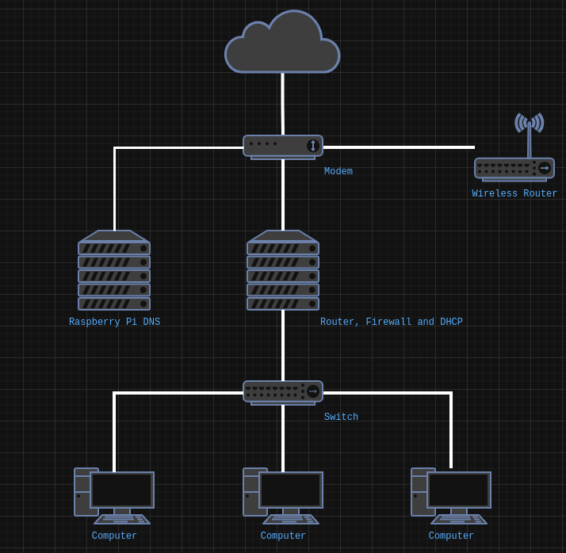

Configurar Fedora Server 42 para compartir el acceso a internet
Pasos para configurar un servidor con Fedora Server 42 para que sea un ruteador a internet con muro de fuego y servicio de DHCP.
21 July 2025
La Agencia de Seguridad Nacional de los EE.UU. / National Security Agency ha publicado recomendaciones para incrementar la seguridad de las redes hogareñas. Entre las que menciona la actualización regular del software tanto de las computadoras como de los dispositivos electrónicos (ruteadores, teléfonos inteligentes, tabletas, televisores, consolas, asistentes, etc.).
Debemos estar concientes de que todos estos aparatos que requieren conexión a internet también pueden enviar su información (actividad, voz y video) así como la que puedan averiguar de los dispositivos que estén en la misma red.
Vamos a describir un ejemplo de una situción de riesgo: supongamos que tenemos un televisor que puede visualizar fotos y reproducir música y videos desde la red local, así que habilitamos en nuestra computadora el acceso a los mismos... y en un descuido, sin contraseña y a todos los documentos personales. Como en muchas casas, en la misma red está un foco inteligente cuyo software nunca ha sido actualizado o que desde su fabricación viene programado para hacer rutinas de observación... y tal vez de recolección de datos de lo que encuentre en su red hogareña.
Objetivo
Configurar un servidor con Fedora Server 42 para que sea un ruteador a internet con muro de fuego y servicio de DHCP. Las características de este equipo son relativamente modestas:
- Procesador Intel Celeron J1800 2.4 GHz de dos núcleos
- RAM 4 GB
- SSD 64 GB SATA
- Dispositivo de red ethernet integrado de 1Gbit/s
- Dispositivo de red ethernet PCI de 1Gbit/s
También servirá para crear una red local cableada y separada de la red inalámbrica como se ilustra en este diagrama:

Un componente adicional es una Raspberry Pi con Pi-Hole para que funcione como el DNS de las dos redes.
Comenzemos a partir de que ya tiene instalado Fedora Server 42 en el equipo.
Actualizar Fedora Server
sudo dnf -y update
Instalar lshw
sudo dnf install lshw
Revisar los dispositivos de red
sudo lshw -class network
Para este equipo en particular
enp1s0esta conectado a la red local y tendra la direccion IP estatica 10.11.11.1/24enp4s0conectado al modem hacia internet con la direccion IP 192.168.100.15/24
Configurar los dispositivos con Network Manager
Revisar los dispositivos con Network Manager
nmcli device status
Revisar las direcciones IP
ip a
Renombrar la conexion al dispositivo que va a internet
nmcli conn mod enp4s0 connection.id internet
Agregar una nueva conexion compartida de nombre local
nmcli conn add type ethernet ifname enp1s0 ipv4.method shared con-name local
Donde el metodo shared hace que...
- Habilita IP forwarding en
enp1s0 - Agrega las reglas al muro de fuego para habilitar el masquerading
- Arranca dnasmasq para ofrecer servicios de DHCP y DNS
Ver las conexiones resultantes
nmcli conn show
Ver la direccion IP
ip -o addr show enp1s0
Definir la direccion IP de local a 10.11.11.1/24
nmcli conn mod local ipv4.addresses 10.11.11.1/24
Levantar la conexion de nombre local
nmcli conn up local
Ver las conexiones para identificar la que no se use
nmcli conn
Eliminar la conexion no usada con su identificador
nmcli conn delete 259601a2-6e56-4e37-b4a0-8a1ea1c68787
Configurar el muro de fuego
Ver las zonas
sudo firewall-cmd --get-active-zones
Debe mostrar estas dos zonas
- FedoraServer con el dispositivo
enp4s0haciainternet - nm-shared con el dispositivo
enp1s0hacia la redlocal
Ver los servicios de la zona nm-shared
sudo firewall-cmd --zone=nm-shared --list-services
Agregar cockpit a los servicios de esa zona
sudo firewall-cmd --zone=nm-shared --add-service=cockpit
Ver los servicios de la zona FedoraServer
sudo firewall-cmd --zone=FedoraServer --list-services
Eliminar los servicios cockpit y ssh de esa zona
sudo firewall-cmd --zone=FedoraServer --remove-service=cockpit
sudo firewall-cmd --zone=FedoraServer --remove-service=ssh
Fijar todos los cambios para que sean permanantes
sudo firewall-cmd --runtime-to-permanent
Configurar el servicio DHCP
Crear un archivo de configuracion
sudo nano /etc/NetworkManager/dnsmasq-shared.d/01-read-hosts.conf
Con este contenido
addn-hosts=/etc/hosts
Crear un archivo para configurar las direcciones IP estaticas con las mac adresses de los equipos en la red local
sudo nano /etc/NetworkManager/dnsmasq-shared.d/11-local-network.conf
Escribir una linea para cada mac address y la direccion IP
dhcp-host=xx:xx:xx:xx:xx:xx,10.11.11.11
dhcp-host=xx:xx:xx:xx:xx:xx,10.11.11.12
dhcp-host=xx:xx:xx:xx:xx:xx,10.11.11.13
dhcp-host=xx:xx:xx:xx:xx:xx,10.11.11.14
Editar /etc/hosts
sudo nano /etc/hosts
Agregar una linea para cada direccion IP y el nombre de equipo en la red local
10.11.11.11 equipo1
10.11.11.12 equipo2
10.11.11.13 equipo3
10.11.11.14 equipo4
Reiniciar Network Manager para aplicar los cambios
sudo systemctl restart NetworkManager
Configurar Pi-Hole en IP estatica en el dispositivo a internet
Para usar una Raspberry Pi con Pi-Hole como servidor DNS en la red que proporciona el internet he de cambiar...
Cambiar el metodo a manual
sudo nmcli con mod internet ipv4.method manual
Definir la direccion IP estatica del dispositivo que esta conectado al modem
sudo nmcli con mod internet ipv4.addresses 192.168.100.102/24
Definir el ruteador por defecto con la direccion IP del modem
sudo nmcli con mod internet ipv4.gateway 192.168.100.1
Definir la direccion IP del DNS hacia la Raspberry Pi
sudo nmcli con mod internet ipv4.dns 192.168.100.103
Ignorar los datos que sobre DNS vaya a proporcionar el modem
sudo nmcli con mod internet ipv4.ignore-auto-dns yes
Reiniciar Network Manager para aplicar los cambios
sudo systemctl restart NetworkManager